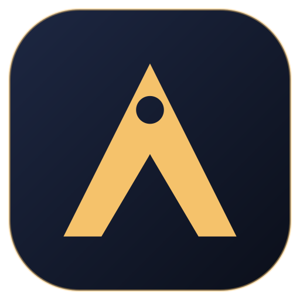
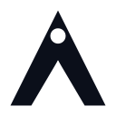

The mark: a peak inside an A.
Arvion is named after nothing in particular — it had to become a wordmark and a symbol. The chosen mark is a geometric A whose counter is a mountain silhouette, with the sun above the ridge: Kathmandu, and the forward direction of the work, without drawing a literal sunrise.
It is one shape, built from two cuts, which is why it still reads at 16 pixels and why it is easier to protect than the earlier eagle illustration.


What ships

App icon / avatar
MonochromeClear space
Keep free space equal to the width of the A's left leg (about 18% of the mark height) on every side. Nothing enters that square: no text, no border, no other logo.
Minimum size
24 px / 8 mm for the monogram, 96 px / 28 mm for the horizontal lockup. Below that, use the app icon instead of the wordmark.
Do not
Do not outline it, add a gradient, rotate it, place it on a busy photograph, or rebuild the wordmark in another typeface. The mark is gold, white or black; that is the whole palette.
Tokens
#0B0F1A#121826#F5C26B#3A7BFF#F7F3EA#B23A2BGold on night is the house accent (contrast 7.6:1). Product themes swap the accent but keep the same structure, which is why the gallery looks like one studio with range rather than thirty products with thirty brands.
Typography
Headings and numerals. SemiBold and Bold only, tight tracking (-0.02em) above 24 px.
Body, UI and tables. 400/500 for text, 600 for labels, tabular numerals in dashboards.
Five directions we considered
Peak A
Counter is a mountain, sun above the ridge. Chosen: distinct, scalable, easy to protect.
Ascent
A from an upward arrow. Strong, but A-as-arrow is a crowded category.
Aperture a
Lowercase a with an orbit and node. Reads infrastructure, less authoritative.
Forge
Two folded planes with a gold seam. Confident, fiddly at small sizes.
V-notch tile
App-icon-first square. Good as an avatar, weak as the main mark.